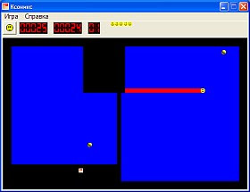

Была создана в 1984 году для платформы PC как клон игры Qix, появившейся ранее на аркадных автоматах. Была популярна в 1980-е и 1990-е годы.
Придумана Иланом Рабом и Дэни Катцем.
Существует много версий для разных платформ.
Таким образом вывглядела первая игра на ОС Windows.
| name | score | |
| 1. | ||
| 2. | ||
| 3. | ||
| 4. | ||
| 5. | ||
| 6. | ||
| 7. | ||
| 8. | ||
| 9. | ||
| 10. |
Игровое поле представляет собой сетку из квадратных или прямоугольных ячеек, поэтому игра легко реализуется в текстовом режиме экрана.
Ячейки могут быть двух типов: условно «суша» и «море».
По полю движутся управляемый игроком Xonix и управляемые программой монстры.
Xonix может двигаться по вертикали и горизонтали, монстры — по диагонали.
Монстры бывают «сухопутными», «морскими» и «удаляющими», то есть движутся или только по «суше», или только по «морю», отскакивая от разделяющей их границы.
Xonix может свободно передвигаться по «суше», где он уязвим для «сухопутных» монстров.
Выходя в «море», он оставляет за собой след, уязвимый для «морских» монстров, при этом в «море» нельзя изменить направление движения на противоположное, можно поворачивать только на 90 градусов в любую сторону, также в «море» нельзя останавливаться.
Так же в море Xonix уязвим для «удаляющих» монстров, при столкновении. Монстры такого типа, ударяясь о «сушу», удаляют клетки, с которыми он соприкасается,то есть превращает их в «море».
Как только Xonix снова оказывается на «суше», след его превращается в новую «сушу». Если при этом в «море» появилась замкнутая область, не содержащая точек, то вся эта область также превращается в «сушу».
Условиями проигрыша игры являются сбивание Xonix монстром, пересечение его хвоста в море, попытка Xonix изменить направление или остановки в «море». Условием перехода на новый уровень является превращение 80% «моря» в «сушу».
| → | море | |
| → | суша | |
| → | Xonix | |
| → | след оставляемый Xonix | |
| → | морской монстр | |
| → | сухопутный монстр | |
| → | удаляющий монстр |
| → | направляет Xonix вверх | |
| → | направляет Xonix влево | |
| → | направляет Xonix вниз | |
| → | направляет Xonix вправо | |
| → | останавливает игру |